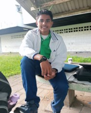

Over Mij
Hi ik ben Maniche Kharpatoe
Ik ben 17 jaar oud
, en u de lezer zal vandaag een digitale cv zien
, en zoals ik zeg aan een ieder:
"Bouwen aan een toekomst, één prestatie tegelijk."
Programmeertalen & Skills
- HTML
- CSS
- JavaScript
Services
Web Development
Web development is het proces van het bouwen en onderhouden van websites, waarbij zowel front-end (client-side) als back-end (server-side) programmering betrokken is.
Web Design
Web design is het proces van het creëren van de visuele en functionele aspecten van websites, inclusief lay-out, kleurenschema's, typografie en gebruikerservaring.
Responsive Web Design
Responsive Web Design zorgt ervoor dat websites zich automatisch aanpassen aan verschillende schermformaten voor een optimale gebruikerservaring.
CV
Naam : Kharpatoe.
Voornaam : Maniche
Geboorte datum : 14-06-2007.
Geboorte plaats : Diakonese Ziekenhuis.
Adress : Monplaisirweg 68a.
Woonplaats : Nieuwe Grond.
E-mail address : kharpatoemaniche@gmail.com.
Telefoon nummer : +597 8899493.
Burgerlijke staat : Ongehuwd.
Natonaliteit : Surinamer.
Opleidingen:
Periode van - tot | Opleidingen | Diploma
2019-2023. | Mulo | Mulo - B
2023-2024. | Natin | ---
Werk ervaringen:
Periode van - tot | Bedrijf of werkgever | Referentie
2022-2023. | Munes Tech | Mr. Ramdas M.(878-5487)
Referentie:
Mevr. Newland +597 879-2682.
Contact
Contact via WhatsApp